Un sistema operativo (SO) es el conjunto de programas que actúan como intermediarios entre el usuario y el hardware de la computadora. • Permite que los recursos físicos (CPU, memoria, dispositivos) sean utilizados de manera eficiente. • Proporciona una interfaz para que los usuarios ejecuten aplicaciones sin necesidad de interactuar directamente con el hardware. • Se considera el “administrador” del sistema, ya que controla y coordina el uso de los recursos. Ejemplo práctico: Cuando enciendes una computadora y puedes abrir programas como Word o Google Chrome, el sistema operativo es quien administra todo para que funcionen correctamente.
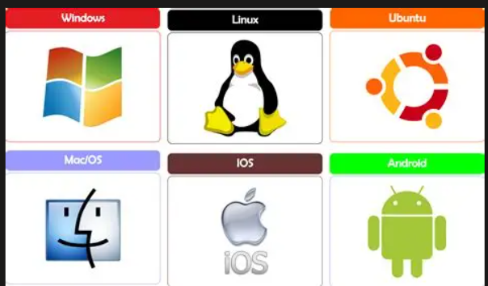
1.¿Que es un sistema operativo?
2.¿Por qué se considera al sistema operativo el "administrador" del sistema?
3.¿Cuál es una característica de sistema operativo?
1.¿Que función realiza la gestión de archivos en un sistema operativo?
2.¿Qué característica describe la portabilidad de un sistema operativo?
3.¿Cuál es la función principal de la seguridad en un sistema operativo?
Década de 1950: sistemas por lotes (Batch Processing). Los programas se ejecutaban uno tras otro sin interacción del usuario. Década de 1960: sistemas multiprogramados y de tiempo compartido. Se introdujo la multitarea y varios usuarios podían compartir la máquina. Década de 1970–80: aparición de sistemas interactivos y primeras interfaces gráficas. Década de 1990: popularización de sistemas operativos comerciales como Windows y Linux. Actualidad: sistemas distribuidos, móviles (Android, iOS), en la nube y especializados en tiempo real (RTOS).
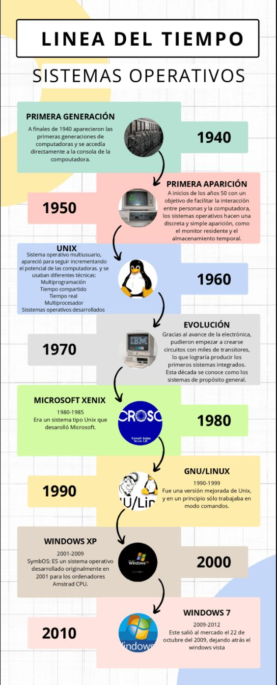
1.¿Que tipo de sistema operativo predominaban en la década de los 1950?
2.¿Qué innovación apareció en la década de 1950?
3.¿Qué caracteristica define la evolución actual de los sistemas operativos?
Los sistemas operativos pueden clasificarse de varias maneras, lo que nos ayuda a entender su uso y funcionamiento.
1.¿Que caracteriza a un sistema operativo monotarea?
2.¿Qué define a un sistema operativo multiusuario?
3.¿Qué diferencia a un sistema distribuido de uno centralizado?
A medida que fueron creciendo las necesidades de los usuarios y se perfeccionaron los sistemas, se hizo necesaria una mayor organización del software del sistema operativo, donde una parte del sistema contenía subpartes y esto organizado en forma de niveles. Es una estructura jerárquica, con mayor organización del software del sistema operativo. El sistema operativo se divide en partes o niveles, cada uno perfectamente definido y con un claro interface (comunicación) con el resto de los elementos. 1. Núcleo (Kernell) Es la parte primordial del sistema operativo. El núcleo o centro del sistema operativo administra todo el sistema, sincroniza todos los procesos. A nivel de núcleo solo se trabaja con procesos. 2. Gestión de entrada/salida El sistema operativo administra los dispositivos externos a través de sus controladores. 3. Gestión de memoria El sistema operativo administra todos los aspectos relativos a memoria real y memoria virtual. 4. Sistemas de archivos El sistema operativo se ocupa de administrar los archivos del usuario a través de una estructura de directorios con algún tipo de organización. 5. Intérprete de comandos Es un mecanismo de comunicación entre los usuarios y el sistema. Lee las instrucciones del usuario y hace que se ejecuten las funciones del sistema solicitadas. Cuando imprimes un documento, la aplicación envía la orden al sistema operativo y este la comunica al hardware de la impresora mediante distintos niveles internos.
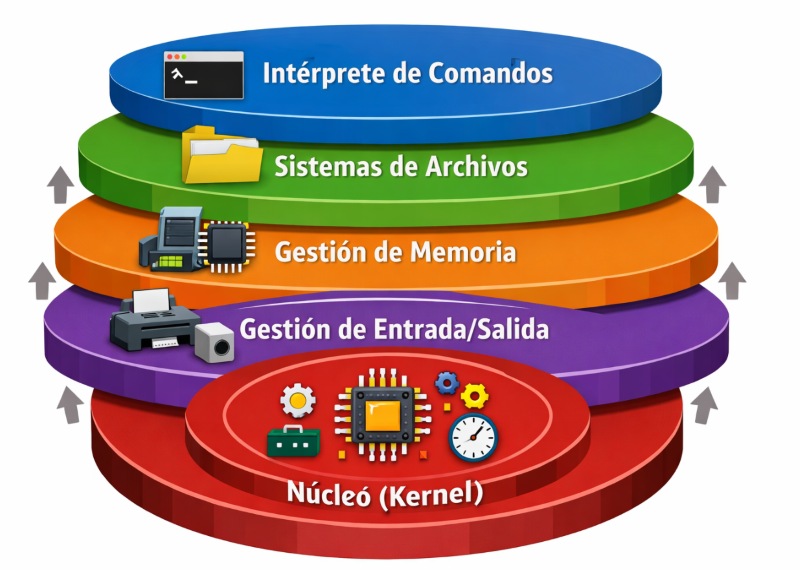
1.¿Cuál es la función principal del núcleo (kernel) en un sistema operativo
2.¿Qué nivel del sistema operativo se encarga de administrar los dispositivos externos?
3.¿Qué papel cumple el intérprete de comandos dentro del sistema operativo?
En informática, un núcleo o kernel (de la raíz germánica Kern, núcleo, hueso) es un software que constituye una parte fundamental del sistema operativo, y se define como la parte que se ejecuta en modo privilegiado (conocido también como modo núcleo). Es el principal responsable de facilitar a los distintos programas acceso seguro al hardware de la computadora o en forma básica, es el encargado de gestionar recursos, a través de servicios de llamada al sistema. Como hay muchos programas y el acceso al hardware es limitado, también se encarga de decidir qué programa podrá usar un dispositivo de hardware y durante cuánto tiempo, lo que se conoce como multiplexado. Acceder al hardware directamente puede ser realmente complejo, por lo que los núcleos suelen implementar una serie de abstracciones del hardware. Esto permite esconder la complejidad, y proporcionar una interfaz limpia y uniforme al hardware subyacente, lo que facilita su uso al programador. Ejemplo práctico: Cuando abres un videojuego, el núcleo del sistema operativo administra memoria y procesador para que el juego funcione correctamente.
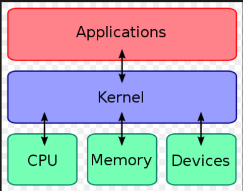
1.¿En qué modo se ejecuta el núcleo de un sistema operativo
2.¿Cuál es una de las funciones principaes del núcleo?
3.¿Qué técnica utiliza el núcleo para decir qué programa usa un dispositivos y por cuánto tiempo?
Un proceso en sistemas operativos es un programa o conjunto de instrucciones que se ejecutan en un sistema operativo. Es una unidad de trabajo que se ejecuta de forma independiente y que utiliza los recursos del sistema, como la memoria, el procesador y los dispositivos de entrada/salida. Un proceso se puede considerar como una instancia de un programa en ejecución. Cada proceso tiene su propio espacio de direcciones, que es una área de memoria que contiene el código del programa, los datos y la pila de llamadas. Cada proceso también tiene su propio conjunto de registros, que son una parte del procesador que almacena los valores de las variables. Los procesos pueden ser de dos tipos: procesos de usuario y procesos de sistema. Los procesos de usuario son programas que se ejecutan en el espacio de usuario, mientras que los procesos de sistema son programas que se ejecutan en el espacio de sistema. Los procesos de sistema son los que manejan las operaciones del sistema, como la gestión de memoria o la gestión de archivos. En un sistema operativo, los procesos se crean y se eliminan dinámicamente según sea necesario. Ejemplo práctico: Cuando abres Spotify, el sistema operativo crea un proceso para ejecutar la aplicación.
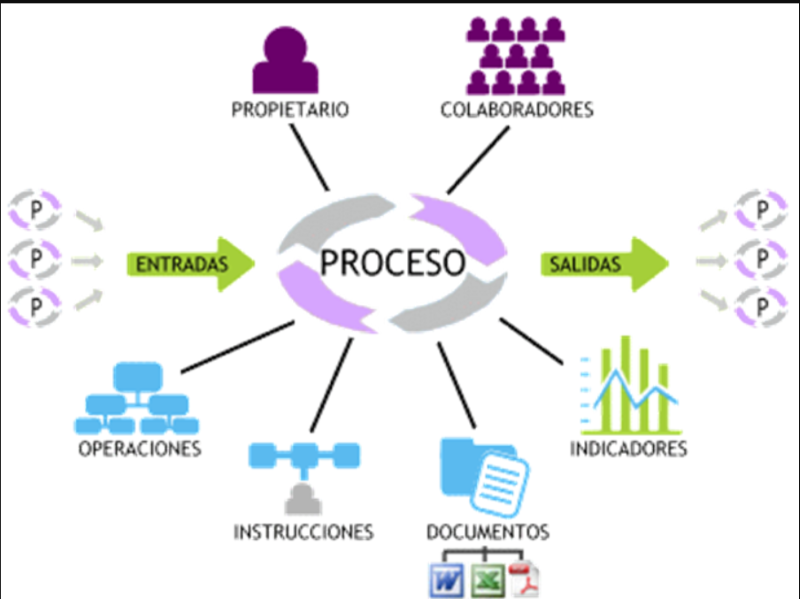
1.¿Qué es un proceso en un sistema operativo
2.¿Qué diferencia a un proceso de un usuario de un proceso del sistema?
3.¿Qué contiene el espacio de direcciones de un proceso?
Para que un programa pueda ser ejecutado, el sistema operativo crea un nuevo proceso, y el procesador ejecuta una tras otra las instrucciones del mismo. En un entorno de multiprogramación, el procesador intercalará la ejecución de instrucciones de varios programas que se encuentran en memoria. El sistema operativo es el responsable de determinar las pautas de intercalado y asignación de recursos a cada proceso.
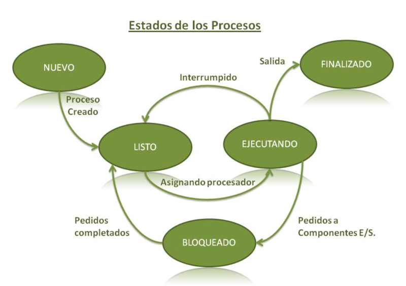
1.¿Qué significa que un proceso este en estado "bloqueado"?
2.¿Qué ocurre en la transición C?
3.¿Cuál es la funcion de la transición A?
Un proceso ligero es un programa en ejecución (flujo deejecución) que comparte la imagen de memoria y otrasinformaciones con otros procesos ligeros. Un procesopuede contener un solo flujo de ejecución, como ocurre enlos procesos clásicos, o más de un flujo de ejecución(procesos ligeros). Todos los procesos ligeros de un mismo proceso comparten la información del mismo. Enconcreto, comparten: ●Espacio de memoria. ●Variables globales. ●Archivos abiertos. ●Procesos hijos. ●Temporizadores. ●Señales y semáforos. ●Contabilidad. Características ●Se comparten recursos. La compartición de la memoria permite a las hebras parescomunicarse sin usar ningún mecanismo de comunicación inter-proceso del SO. ●La conmutación de contexto es más rápida gracias al extenso compartir de recursos. ●No hay protección entre las hebras. Una hebra puede escribir en la pila de otra hebradel mismo proceso. Ejemplo práctico: Un navegador puede usar un hilo para reproducir video y otro para cargar páginas web al mismo tiempo.
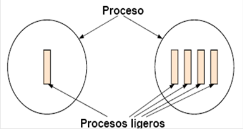
1.¿Qué comparten los procesos ligeros dentro de un mismo proceso?
2.¿Cuál es una ventaja principal de los hilos frente a los procesos clásicos?
3.¿Qué riesgo existe al usar hilos dentro de un mismo proceso?
Cuando un proceso se está llevando a cabo y se bloquea esperando por la E/S, en la CPU se envía una instrucción para que se ejecute otro proceso (no de forma paralela; sino intercalada), ayudando a hacer más eficiente el procesamiento de programas, a esto se le llama concurrencia. La concurrencia puede presentarse en tres contextos diferentes: • Varias aplicaciones: La multiprogramación se creó para permitir que el tiempo de procesador de la máquina fuese compartido dinámicamente entre varios trabajos o aplicaciones activas. • Aplicaciones estructuradas: Como ampliación de los principios del diseño modular y la programación estructurada, algunas aplicaciones pueden implementarse eficazmente como un conjunto de procesos concurrentes. • Estructura del sistema operativo: Las mismas ventajas de estructuración son aplicables a los programadores de sistemas y se ha comprobado que algunos sistemas operativos están implementados como un conjunto de procesos. La secuencialidad, en contraste, implica que las operaciones o procesos se ejecutan en un orden lineal, uno tras otro. No hay paralelismo, y cada tarea espera a que la anterior termine antes de comenzar. Esto es más sencillo de implementar y no requiere el uso de mecanismos de sincronización, pero puede ser menos eficiente en entornos donde la simultaneidad de tareas es deseable. Características: Simplicidad: La programación secuencial es más simple, ya que no hay problemas de sincronización ni condiciones de carrera. Desempeño ilimitado: Los sistemas secuenciales no pueden aprovechar la capacidad total del hardware en sistemas modernos, ya que se limitan a procesar una tarea a la vez. Los sistemas operativos modernos deben combinar ambos enfoques según las necesidades del sistema. La concurrencia es esencial para manejar múltiples usuarios o servicios de manera eficiente, mientras que algunos procesos internos del sistema o tareas específicas pueden ejecutarse de forma secuencial para simplificar la administración de los recursos o la seguridad. Ejemplo práctico: Escuchar música mientras escribes una tarea es concurrencia; resolver operaciones matemáticas una tras otra es secuencialidad.
1.¿Qué ocurre cuando un proceso se bloquea esperando por la E/S?
2.¿Cuál es una característica principal de la programación secuencial?
3.¿En qué contextos puede presentarse la concurrencia?
La planificación es el proceso por el cual el sistema operativo selecciona qué proceso ejecutar. La selección del proceso se basa en alguno de los algoritmos de planificación. La planificación de la CPU, en el sentido de conmutarla entre los distintos procesos, es una de las funciones más importantes del sistema operativo. Este despacho es llevado a cabo por un pequeño programa llamado planificador a corto plazo o dispatcher (despachador). La misión del dispatcher consiste en asignar la CPU a uno de los procesos ejecutables del sistema, para ello sigue un determinado algoritmo. Los acontecimientos que pueden provocar la llamada al dispatcher son: cuando un proceso termina, cuando un proceso pasa a estado de espera, cuando ocurre una interrupción o cuando finaliza el tiempo asignado a un proceso.
Existen tres niveles de scheduling o planificación:
Los principales objetivos de la planificación son mejorar el rendimiento del sistema, aprovechar al máximo la CPU, reducir el tiempo de espera de los procesos y garantizar que todos los procesos reciban atención de manera justa.
Entre los criterios de planificación se encuentran: Ejemplo práctico: El sistema operativo da prioridad a una videollamada antes que a una descarga en segundo plano para evitar interrupciones.
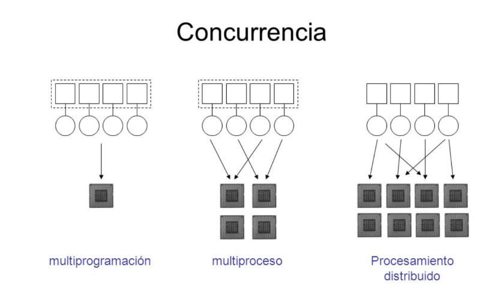
1.¿Cuál es la misión principal del dispatcher (despachador)?
2.¿Cuáles son los tres niveles de planificación en un sistema operativo?
3.¿Cuál es uno de los principales objetivos de la planificación de procesos?
FIFO - (First in - First out)Mejor conocido en español como: "El primero que llega es el primero que sale", este guarda relación con las tipicas colas de supermercado, el primero que seforma es el primero en ser atentido y asi sucesivamente. Una vez que unproceso obtiene la cpu, se ejecuta hasta terminar, ya que es una disciplina “noapropiativa”. Puede ocasionar que procesos largos hagan esperar a procesoscortos y que procesos no importantes hagan esperar a procesos importantes.En resumen este proceso escoge al que lleva más tiempo esperando, sinimportar el grado de importacia o tiempo de ejecución requerido para esetrabajo. Una vez el proceso entra a la CPU nadie puede quitarle su lugar hastaque este termine de hacer sus tareas
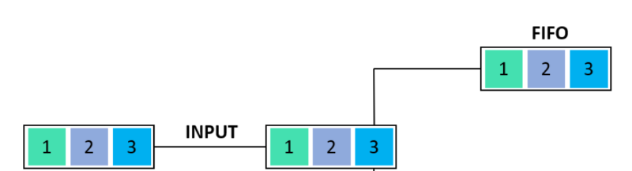
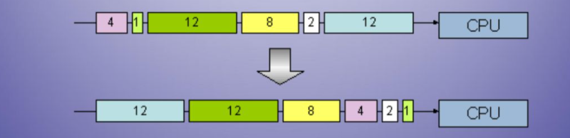
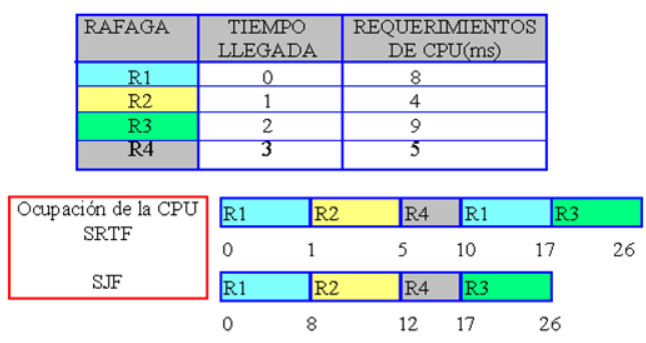
1.¿Cuál es la principal desventaja del algoritmo FIFO?
2.¿Qué diferencia al algoritmo SRTF del SJF?
3.¿Qué característica define al algoritmo Round Robin?
La administración de memoria se refiere a los distintos métodos y operaciones que se encargan de obtener la máxima utilidad de la memoria, organizando los procesos y programas que se ejecutan de manera tal que se aproveche de la mejor manera posible el espacio disponible. Para poder lograrlo, la operación principal que realiza es la de trasladar la información que deberá ser ejecutada por el procesador, a la memoria principal.
1.¿Cuál es la función principal de la administración de memoria en un sistema operativo?
2.¿Cuál es una diferencia clave entre SJF y SRT en la asignación de memoria?
3.¿Qué aspecto busca conjugar la política de asignación de memoria?
La memoria real o principal es en donde son ejecutados los programas y procesos de una computadora y es el espacio real que existe en memoria para que se ejecuten los procesos. Por lo general esta memoria es de mayor costo que la memoria secundaria, pero el acceso a la información contenida en ella es de mas rápido acceso. Características Capacidad, que representa el volumen global de información (en bits) que la memoria puede almacenar. Tiempo de acceso, que corresponde al intervalo de tiempo entre la solicitud de lectura/escritura y la disponibilidad de los datos. Tiempo de ciclo, que representa el intervalo de tiempo mínimo entre dos accesos sucesivos. Rendimiento, que define el volumen de información intercambiado por unidad de tiempo, expresado en bits por segundo. No volatilidad, que caracteriza la capacidad de una memoria para almacenar datos cuando no recibe más electricidad. Los programas y datos deben estar en el almacenamiento principal para: Poderlos ejecutar. Referenciarlos directamente. Jerarquia La jerarquía de memoria es la organización piramidal de la memoria en niveles que tienen las computadoras. El objetivo es conseguir el rendimiento de una memoria de gran velocidad al coste de una memoria de baja velocidad, basándose en el principio de cercanía de referencias. Nivel 0: Registros- memoria de alta velocidad y poca capacidad, integrada en el CPU, que permite guardar y acceder a valores muy usados, generalmente en operaciones matemáticas. Están en la cumbre de la jerarquía de memoria, y son la manera más rápida que tiene el sistema de almacenar datos. Se miden generalmente por el número de bits que almacenan; "registro de 8 bits" o "registro de 32 bits". Se implementan en un banco de registros Los CPU tienen además otros registros usados con un propósito específico, como el contador de programa. Nivel 1: Memoria caché- tipo especial de memoria que se sitúa entre el CPU y la RAM para almacenar datos que se usan frecuentemente. Agiliza la transmisión de datos entre el CPU y la memoria principal. Es de acceso directo y mucho más rápida que la RAM. Nivel 2: Memoria principal- Son circuitos integrados capaces de almacenar información digital, a los que tiene acceso el CPU. Poseen una menor capacidad. Nivel 3: Memoria secundaria- dispositivo encargado de almacenar información de forma permanente. Ejemplo práctico: Cuando abres varias aplicaciones y la computadora se vuelve lenta, significa que la memoria RAM está casi llena.
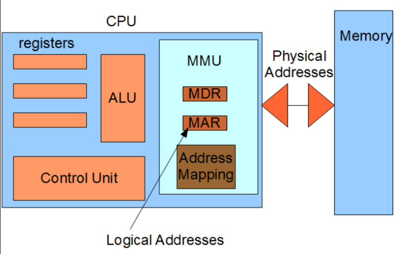
2.¿Cuál es la función de la memoria caché dentro de la jerarquía de memoria?
3.¿Qué característica define la memoria real respecto a la memoria secundaria?
Memoria virtual es un mecanismo de almacenamiento que ofrece al usuario la ilusión de tener una memoria principal muy grande. Se realiza tratando una parte de la memoria secundaria como memoria principal. En la memoria virtual, el usuario puede almacenar procesos con un tamaño mayor que la memoria principal disponible. Por lo tanto, en lugar de cargar un proceso largo en la memoria principal, el sistema operativo carga las distintas partes de más de un proceso en la memoria principal. La memoria virtual se implementa principalmente con paginación y segmentación de la demanda. Paginación: Es una técnica de manejo de memoria, en la cual el espacio de memoria se divide en secciones físicas de igual tamaño, denominadas marcos de página El termino memoria virtual se asocia normalmente con sistemas que emplean paginación, aunque también se puede usar memoria virtual basada en la segmentación. Segmentación La segmentación permite al programador contemplar la memoria como si constara de varios espacios de direcciones o segmentos. Los segmentos pueden ser de distintos tamaños, incluso de forma dinámica. Las referencias a la memoria constan de una dirección de la forma (número de segmento, desplazamiento). Ejemplo práctico: Si la RAM se llena, Windows utiliza parte del disco duro como memoria virtual para seguir ejecutando programas.
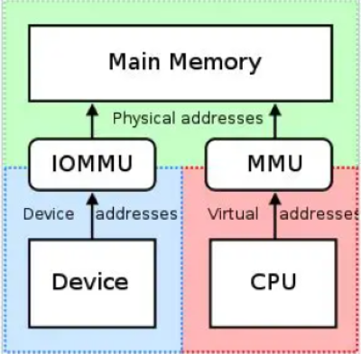
2.¿Cómo se implementa principalmente la memoria virtual?
3.¿Qué diferencia principal existe entre paginación y segmentación?
Las estrategias para la administración de sistemas de almacenamiento virtual condicionan la conducta de los sistemas de almacenamiento virtual que operan según esas estrategias. Se consideran las siguientes estrategias: Estrategias de búsqueda: Tratan de los casos en que una página o segmento deben ser traídos del almacenamiento secundario al primario. Las estrategias de Búsqueda por demanda esperan a que se haga referencia a una página o segmento por un proceso antes de traerlos al almacenamiento primario. Los esquemas de búsqueda anticipada intentan determinar por adelantado a qué páginas o segmentos hará referencia un proceso para traerlos al almacenamiento primario antes de ser explícitamente referenciados. Estrategias de colocación: Tratan del lugar del almacenamiento primario donde se colocará una nueva página o segmento. Los sistemas toman las decisiones de colocación de una forma trivial ya que una nueva página puede ser colocada dentro de cualquier marco de página disponible. Estrategias de reposición: Tratan de la decisión de cuál página o segmento desplazar para hacer sitio a una nueva página o segmento cuando el almacenamiento primario está completamente comprometido. Ejemplo práctico: El sistema mueve temporalmente información poco utilizada al disco duro para liberar espacio en RAM.
2.¿Qué función cumplen las estrategias de colocación en la administración de memoria virtual?
3.¿Qué buscan resolver las estrategias de reposición?
2.¿Qué función cumple un controlador de dispositivo (driver)?
3.¿Qué ocurre cuando un controlador termina una operación de E/S?
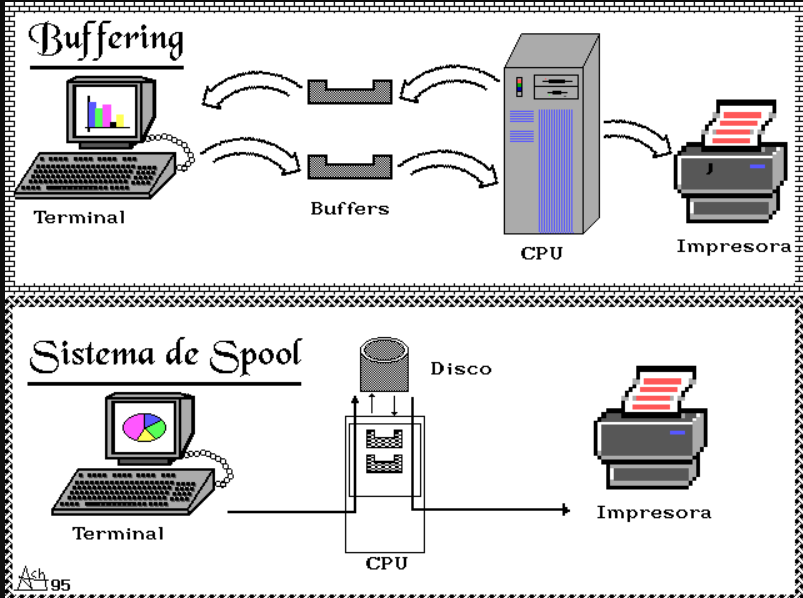
2.¿Cuál es una función esencial de los manejadores de dispositivos?
3.¿Qué ventaja ofrece el uso de DMA (Acceso Directo a Memoria)?
Una Estructura de Datos es una forma de organizar un conjunto de datos elementales con el objetivo de facilitar su manipulación. Un dato elemental es la mínima información que se tiene en un sistema. Los procesos de usuario emiten peticiones de entrada/salida al sistema operativo. Cuando un proceso solicita una operación de E/S, el sistema operativo prepara dicha operación y bloquea al proceso hasta que se recibe una interrupción del controlador del dispositivo indicando que la operación está completa. Las peticiones se procesan de forma estructurada en las siguientes capas: • Manejadores de interrupción: Un manejador de interrupciones, también conocido como ISR (interrupt service routine o rutina de servicio de interrupción), es una subrutina callback en un sistema operativo o en un controlador de dispositivo cuya ejecución es desencadenada por la recepción de una interrupción. Los manejadores de instrucciones tienen una multitud de funciones, que varían basadas en el motivo por el cual la interrupción fue generada y la velocidad en la cual el manejador de interrupciones completa su tarea • Manejadores de dispositivos o drivers. •Software de EIS independiente de los dispositivos. Este software está formado por la parte de alto nivel de los manejadores, el gestor de cache, el gestor de bloques y el servidor de archivos. • Interfaz del sistema operativo. Llamadas al sistema que usan las aplicaciones de usuario. Ejemplo práctico: El sistema operativo guarda una lista de impresiones pendientes antes de enviarlas a la impresora.
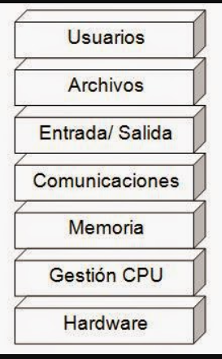
2.¿Qué función cumple el software de E/S independiente de los dispositivos?
3.¿Qué papel cumple la interfaz del sistema operativo en las operaciones de E/S?
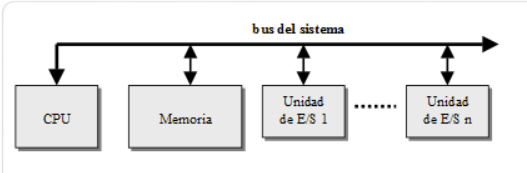
2.¿Por qué es necesaria la sincronización en las operaciones de E/S?
3.¿Qué se entiende por transferencia elemental de información?
Un sistema de archivos es el método y estructura que utiliza un sistema operativo para organizar, almacenar, administrar y recuperar la información guardada en dispositivos de almacenamiento secundarios, como discos duros, memorias USB, discos SSD, CD, DVD y tarjetas SD. Su función principal es permitir que los datos puedan almacenarse de manera ordenada y que los usuarios o programas puedan acceder a ellos fácilmente. Cuando un usuario guarda un archivo, el sistema operativo no almacena la información de manera aleatoria. En realidad, el sistema de archivos divide los datos en bloques o sectores y registra exactamente dónde se encuentran físicamente dentro del dispositivo. Gracias a ello, cuando el usuario solicita abrir el archivo, el sistema puede localizarlo rápidamente. El sistema de archivos también se encarga de: - Asignar nombres a los archivos. - Crear carpetas y subcarpetas. - Controlar permisos de acceso. - Administrar espacio libre. - Evitar corrupción de datos. - Recuperar información ante fallos. Sin un sistema de archivos, la computadora únicamente vería cadenas de bits sin significado. El sistema operativo no podría diferenciar entre imágenes, documentos o programas. Cada sistema operativo utiliza diferentes sistemas de archivos según sus necesidades:
2.¿Cuál de los siguientes sistemas de archivos pertenece a Windows?
3.¿Qué sucede cuando un usuario guarda un archivo en un sistema de archivos?
Un archivo real es aquel que existe físicamente dentro de un dispositivo de almacenamiento. Contiene información almacenada de forma permanente y ocupa espacio real en el disco duro o memoria secundaria. Ejemplos: -Fotografías. -Videos. -Documentos PDF. -Programas ejecutables.
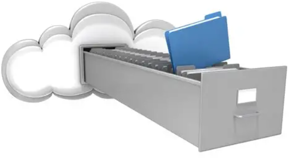
2.¿Cuál de los siguientes ejemplos corresponde a un archivo virtual?
3.¿Cuál es una diferencia clave entre archivo real y archivo virtual según la tabla?
1. Archivos Son la unidad principal de almacenamiento lógico. Cada archivo contiene datos relacionados. Tipos: -Texto. -Audio. -Video. -Ejecutables. -Bases de datos. 2. Directorios o carpetas Permiten organizar archivos de forma jerárquica. Ejemplo: Documentos/ Escuela Fotos Música Los directorios facilitan la localización de información. 3. Metadatos Son datos que describen otros datos. Incluyen: Nombre. Tamaño. Fecha de creación. Fecha de modificación. Permisos. Propietario. Los metadatos ayudan al sistema operativo a administrar archivos correctamente. 4. Bloques o clusters Los discos almacenan información en pequeñas unidades llamadas bloques. Cuando un archivo es guardado: Se divide en partes. Cada parte se almacena en bloques. 5. Tabla de asignación Es una estructura que indica: Qué bloques pertenecen a cada archivo. Qué espacios están libres. 6. Gestor de espacio libre Controla las zonas disponibles del disco para nuevos archivos. Funciones: 1.Detectar espacios libres. 2.Reutilizar áreas vacías. 3.Optimizar almacenamiento. 7. Control de acceso Administra permisos y seguridad. 8. Mecanismos de recuperación Permiten restaurar información ante fallos. Ejemplos: Copias de seguridad. Verificación de integridad.
2.¿Cuál de los siguientes componentes se encarga de indicar qué bloques pertenecen a cada archivo y cuáles están libres?
3.¿Cuál es la función principal del gestor de espacio libre?
Es la forma en que los usuarios observan y administran los archivos. Incluye: Carpetas, subcarpetas, nombres, rutas. Ejemplo: C:\Usuarios\Propietario\Tareas\SistemasOperativos Esto non facilita la busqueda y mejora la organizacion.
2.¿Cuál de los siguientes elementos pertenece a la organización lógica?
3.¿Qué caracteriza a la organización física de los archivos?
Los mecanismos de acceso determinan cómo un programa puede leer o modificar información. Acceso secuencial: Los datos se leen en orden. Ejemplo: Reproducción de música. Acceso Directo: Permite acceder a cualquier posición del archivo. Ejemplo: Bases de datos. Acceso indexado: Utiliza índices para localizar información rapidamente. Ejemplo: Motores de búsqueda.
2.¿Qué caracteriza al acceso directo?
3.¿Cuál de los siguientes mecanismos utiliza índices para localizar información rápidamente?
La memoria secundaria almacena información de manera permanente. Ejemplos: -HDD. -SSD. -USB. Los objetivos son evitar el desperdicio de espacio, mejorar la velociada, reducir la fragmentación, facilitar la recuperación.
2.¿Cuál de los siguientes dispositivos es un ejemplo de memoria secundaria?
3.¿Cuál de los objetivos del manejo de memoria secundaria se menciona en el texto?
El modelo jerárquico organiza archivo en forma de árbol. Cada directorio puede contener archivos o subdirectorios.
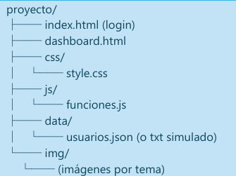
2.¿Qué caracteriza a una ruta absoluta?
3.¿Cuál es una desventaja del modelo jerárquico?
Los sistemas de archivos modernos incluyen herramientas para evitar pérdida de datos.
2.¿Cuál de los siguientes mecanismos corresponde a la verificación de integridad?
3.¿Cuál es el objetivo principal de RAID?
La protección y seguridad informática son mecanismos utilizados para proteger sistemas, información y recursos contra accesos no autorizados, daños o pérdidas. La Proteccion Se enfoca en controlar acceso interno entre usuarios y procesos.La protección evita que un usuario o programa realice operaciones para las cuales no tiene autorización. Por ejemplo, impide que un usuario común modifique archivos críticos del sistema operativo. La protección es importante porque en un sistema multiusuario varios usuarios pueden utilizar simultáneamente los mismos recursos. La seguridad informática es el conjunto de políticas, procedimientos, técnicas y herramientas utilizadas para proteger sistemas computacionales frente a amenazas internas y externas. Objetivos: - Confidencialidad: Solo personas autorizadas acceden a información. - Integridad: Los datos no deben alterarse incorrectamente. - Disponibilidad: La información debe estar accesible cuando se necesite. -Autenticación: Verificar identidad de usuarios. - Control de acceso:Asignar permisos específicos.
2.¿Cuál de los siguientes es un objetivo de la seguridad informática?
3.¿Qué diferencia principal existe entre protección y seguridad informática?
La seguridad informática puede clasificarse de distintas maneras según el área que protege o el tipo de amenaza que enfrenta. Seguridad física; Protege los omponentes materiales del sistema infomático. Incluye: Computadoras, servidores, centros de datos, etc. Seguridad lógica: La seguridad logica se enfoca en proteger software, sistemas operativos, redes, información digital. Este objetivo se cumple en base a: Contraseñas, antivirus, firewalls, cifrados,entre otros. Seguridad activa: Son mecanismos preventivos que intentan evitar ataques antes de que ocurran. Ejemplos: antivirus, sistemas de autenticación. Seguridad perimetral: Protege los limites de la red empresarial. Seuridad de la nube: Protege datos y servicios almacenados en plataformas cloud
2.¿Cuál de los siguientes mecanismos corresponde a la seguridad activa?
3.¿Qué caracteriza a la seguridad lógica?
Control de acceso que hace referencia a las caracteristicas de seguridad que controlan quien puede obtener acceso a los recursos de un sistema operativo. Las aplicaciones llaman a las funciones de control de acceso para establecer quien puede obtener acceso a los recursos especificos o controlar el acceso a los recursos proporcionados por la aplicacion. Un sistema de proteccion debera tener la flexibilidad suficiente para poder imponer una diversidad de politicas y mecanismos. Existen varios mecanismos que pueden usarse para asegurar los archivos, segmentos de memoria, CPU, y otros recursos administrados por el Sistema Operativo. Por ejemplo, el direccionamiento de memoria asegura que unos procesos puedan ejecutarse solo dentro de sus propios espacios de direccion. El timer asegura que los procesos no obtengan el control de la CPU en forma indefinida. La proteccion se refiere a los mecanismos para controlar el acceso de programas, procesos, o usuarios a los recursos definidos por un sistema de computacion. Seguridad es la serie de problemas relativos a asegurar la integridad del sistema y sus datos. Hay importantes razones para proveer proteccion. La mas obvia es la necesidad de prevenirse de violaciones intencionales de acceso por un usuario. Otras de importancia son, la necesidad de asegurar que cada componente de un programa, use solo los recursos del sistema de acuerdo con las politicas fijadas para el uso de esos recursos. Un recurso desprotegido no puede defenderse contra el uso no autorizado o de un usuario incompetente. Los sistemas orientados a la proteccion proveen maneras de distinguir entre uso autorizado y desautorizado.
2.¿Cuál es la función principal del timer en el sistema de protección?
3.¿Por qué es importante proveer protección en un sistema operativo?
Las matrices de acceso son modelos utilizados para representar y controlar los permisos de acceso sobre recursos del sistema. Constituyen una forma organizada de especificar qué usuarios pueden realizar determinadas operaciones sobre archivos, dispositivos o procesos. En una matriz de acceso, las filas representan usuarios o procesos y las columnas representan recursos del sistema. Cada celda contiene los permisos permitidos. Por ejemplo, un usuario puede tener permiso de lectura sobre un archivo, mientras que otro usuario puede tener permisos de lectura y escritura. Los permisos más comunes son lectura, escritura, ejecución y eliminación. Algunos sistemas también permiten permisos más específicos como compartir, modificar atributos o administrar recursos. Las listas de control de acceso, conocidas como ACL, son una implementación práctica de las matrices de acceso. Cada archivo almacena una lista de usuarios autorizados y los permisos correspondientes. Otro método son las capacidades, donde cada usuario almacena una lista de recursos a los cuales tiene acceso. En sistemas Linux se utilizan bits de protección para representar permisos. Estos bits indican si un archivo puede ser leído, escrito o ejecutado por el propietario, el grupo o el resto de usuarios. Las matrices de acceso proporcionan mayor organización y control sobre la seguridad del sistema. Sin embargo, en sistemas muy grandes pueden volverse complejas de administrar debido al gran número de usuarios y recursos.
2.¿Cuál de los siguientes es un ejemplo de implementación práctica de las matrices de acceso?
3.¿Qué permisos básicos suelen incluir las matrices de acceso?
La especificación de protección en un lenguaje de programación permite la descripción de alto nivel de políticas para la asignación y uso de recursos. las políticas para el uso de recursos también podrían variar, dependiendo de la aplicación, y podrían cambiar con el tiempo. Por estas razones, la protección ya no puede considerarse como un asunto que sólo concierne al diseñador de un sistema operativo; también debe estar disponible como herramienta que el diseñador de aplicaciones pueda usar para proteger los recursos de un subsistema de aplicación contra intervenciones o errores. Aquí es donde los lenguajes de programación entran en escena. Especificar el control de acceso deseado a un recurso compartido en un sistema es hacer una declaración acerca del recurso. Este tipo de declaración se puede integrar en un lenguaje mediante una extensión de su mecanismo de tipificación. Si se declara la protección junto con la tipificación de los datos, el diseñado de cada subsistema puede especificar sus necesidades de protección así debería darse directamente durante la redacción del programa, y en el lenguaje en el que el programa mismo se expresa.
2.¿Por qué la protección no debe considerarse solo un asunto del diseñador del sistema operativo?
3.¿Cómo puede integrarse la protección en un lenguaje de programación?
La validación es el proceso mediante el cual el sistema verifica que usuarios, datos y operaciones sean correctos y legítimos. Uno de los métodos más comunes de validación es el uso de contraseñas. Aunque son ampliamente utilizadas, presentan problemas cuando los usuarios utilizan claves débiles o repetidas. La biometría utiliza características físicas como huellas digitales, reconocimiento facial o escaneo de iris para validar identidades. Los tokens generan códigos temporales que aumentan la seguridad de autenticación. La autenticación multifactor combina varios métodos simultáneamente, como contraseña y código enviado al teléfono móvil. Las amenazas informáticas son situaciones o acciones capaces de dañar sistemas o comprometer información. El malware es software diseñado para causar daño. Existen varios tipos de malware. Los virus infectan archivos y se replican propagándose a otros sistemas. Los gusanos se propagan automáticamente a través de redes sin necesidad de intervención del usuario. Los troyanos aparentan ser programas legítimos pero contienen funciones maliciosas ocultas. El spyware recopila información del usuario sin consentimiento. El ransomware secuestra archivos y exige pagos para recuperarlos. El phishing es una técnica de engaño utilizada para robar información confidencial mediante correos falsos o sitios web clonados. Los ataques DoS y DDoS buscan saturar servidores o servicios para impedir su funcionamiento normal. La ingeniería social consiste en manipular psicológicamente a las personas para obtener información sensible. Las amenazas internas provienen de empleados o usuarios autorizados que hacen uso indebido de recursos. Las consecuencias de ataques informáticos incluyen robo de información, pérdidas económicas, interrupción de servicios y daño reputacional.
2.¿Qué tipo de malware se propaga automáticamente a través de redes sin intervención del usuario?
3.¿Cuál es una consecuencia de los ataques informáticos mencionada en el texto?
El cifrado es un método que permite aumentar la seguridad de un mensaje o de un archivo mediante la codificación del contenido, de manera que sólo pueda leerlo la persona que cuente con la clave de cifrado adecuada para descodificarlo. Por ejemplo, si realiza una compra a través de Internet, la información de la transacción (como su dirección, número de teléfono y número de tarjeta de crédito) suele cifrarse a fin de mantenerla a salvo. Use el cifrado cuando desee un alto nivel de protección de la información. Métodos y Técnicas de Cifrado: Cifrado de sustitución: El cifrado de sustitución consiste en reemplazar una o más entidades (generalmente letras) de un mensaje por una o más entidades diferentes. Existen varios tipos de criptosistemas de sustitución: • La sustitución monoalfabética consiste en reemplazar cada una de las letras del mensaje por otra letra del alfabeto. • La sustitución polialfabética consiste en utilizar una serie de cifrados monoalfabéticos que son re-utilizados periódicamente. • La sustitución homófona hace posible que cada una de las letras del mensaje del texto plano se corresponda con un posible grupo de caracteres distintos. • La sustitución poligráfica consiste en reemplazar un grupo de caracteres en un mensaje por otro grupo de caracteres. Cifrado Transposición: El método de cifrado por transposición consiste en reordenar datos para cifrarlos a fin de hacerlos ininteligibles. Esto puede significar, por ejemplo, reordenar los datos geométricamente para hacerlos visualmente inutilizables. El cifrado Simétrico: El cifrado simétrico (también conocido como cifrado de clave privada o cifrado de clave secreta) consiste en utilizar la misma clave para el cifrado y el descifrado. El cifrado consiste en aplicar una operación (un algoritmo) a los datos que se desea cifrar utilizando la clave privada para hacerlos ininteligibles. El algoritmo más simple (como un OR exclusivo) puede lograr que un sistema prácticamente a prueba de falsificaciones. El cifrado asimétrico:El cifrado asimétrico (también conocido como cifrado con clave pública). En un criptosistema asimétrico (o criptosistema de clave pública), las claves se dan en pares: • Una clave pública para el cifrado. • Una clave secreta para el descifrado. 1.¿Qué caracteriza al cifrado simétrico?
2.¿Cuál de los siguientes métodos corresponde al cifrado por transposición?
3.¿Qué tipo de cifrado utiliza pares de claves (pública y privada)?